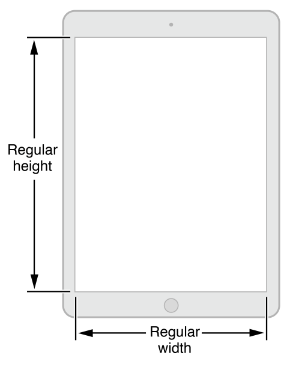
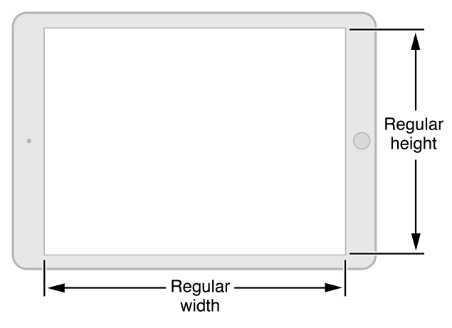
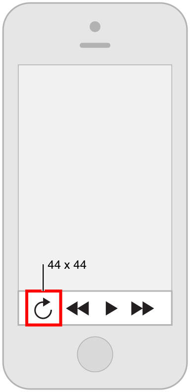
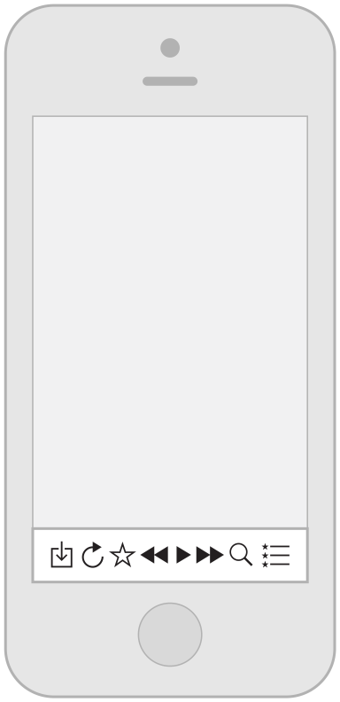

레이아웃
가변성 구축
사람들은 일반적으로 자신의 장치에 좋아하고 지향하는 앱을 사용하고 싶어한다. iOS 8부터는, 사이즈 클래스와 자동 레이아웃을 사용한다. 이것은 스크린의 레이아웃, 뷰 컨트롤러, 그리고 뷰가 디스플레이 환경이 변화할 때 적용되게 한다.(디스플레이 환경의 개념은 전체 장치스크린이나 혹은 팝오버 영역이나 분할 뷰 컨트롤러의 주요부분 같은 일부를 참조할 수 있다.)
iOS는 '레귤러'와 '컴팩트' 두개의 사이즈 클래스를 정의한다. 레귤러 사이즈 클래스는 넓은 영역에서 사용되고, 컴펙트 사이즈 클래스는 제약된 공간에서 사용된다. 디스플레이 환경에 맞추기위해서, 사용자는 수직 사이즈 클래스와 수평 사이즈 클래스를 명시한다. 예상한 대로 iOS장치는 눕혔을 때와 세웠을 때의 다른 다스플레이 환경을 한 세트로 사용될수 있다.
iOS는 디스플레이 환경의 사이즈 클래스가 바뀔 때, 자동적으로 다양하게 레이아웃 변화를 한다. 예를 들어, 수직 사이즈 클래스가 '컴펙트'에서 '레귤러' 로 바뀔때, 네비게이션바와 툴바는 자동적으로 길어진다.
사이즈 클래스에 의존하여 레이아웃에 변화를 줄 때, 앱은 어떤 디스플레이 환경에서도 근사하게 보인다. 사이즈 클래스 디자인 도움말을 보고 인터페이스 빌더에서 사이즈 클래스가 동작하는 법을 배워라
다음의 구체작인 예들은 어떻게 사이즈 클래스가 다양한 장치의 디스플레이 환경에 맞추어지는 지를 상상하는데 도움이 될 것이다. 예를 들어, iPad는 세로와 가로 모두 규정된 사이즈와 방향을 사용한다. 다시말해, iPad 디스플레이 환경은 항상 규정된 가로, 세로 길이이다.
The size classes of iPad in portrait
The size classes of iPad in landscape
iPhone의 디스플레이 환경은 장치와 장치의 방향에 따라 변할 수 있다..
portrait상태에서, iPhone 6 Plus는 컴팩트사이즈클래스의 너비와 레귤러사이즈클래스의 높이클 사용한다.
landscape상태에서, iPhone 6 Plus는 레귤러사이즈클래스의 너비와 컴펙트사이즈클래스의 높이를 사용한다.
iPhone 6를 포함해서 모든 다른 iPhone 모델은 같은 사이즈 클래스 세트를 사용한다.
portrait 상태에서, iPhone 6, iPhone 5, 그리고 iPhone 4s는 컴팩트클래스사이즈의 너비와 레귤러컴펙트사이즈의 높이를 사용한다.
landscape 상태에서, 위의 장치들은 컴팩스사이즈클래스의 너비와 높이를 사용한다.
Provide a Great Experience in Each Environment
적응성의 편리함을 이용할 때, 디스플레이 환경의 변화에 적절히 응답할수 있도록 당신의 UI를 확실히 할 수 있다. 모든 장치와 방향에서 멋진 경험을 하게 해주는 아래의 가이드라인들을 따라라.
모든 환경에서 주요 컨텐트로의 포커스를 유지해라 이것은 가장 중요하다. 사람들은 관심있는 컨텐츠를 보고, 상호작용 하기 위해서 당신의 앱을 사용한다. 환경이 변화할 때 포커스가 바뀌면 혼란을 줄 수 있고, 앱이 통제되지 않는 것 처럼 느껴지게 할 수 있다.
레이아웃의 불필요한 변화를 피해라. 모든 환경에서의 비슷한 경험은 사람들이 장치를 회전시키거나 당신의 앱을 다른 장치에서 실핼할 때 사람들이 사용패턴을 유지할수 있게 한다. 예를 들어, 가로의 레귤러 환경에서 이미지의 표시를 위해 격자를 사용하면, 격자의 치수를 조절 하더라도 가로의 컴팩트 환경에서 리스트에 동일한 정보를 표시하지 않아도 된다.
앱이 단 하나의 방향으로 수행된다면 간단하게해라. 사람들은 당신의 앱을 다른 방향으로 사용하기를 기대하고, 그 기대가 충족될 떄 가장 좋다. 그렇지만 당신의 앱이 단 하나의 방향으로 수행되는 것이 필수적일 때 아래의 것들을 따라야한다.
사용자들에게 장치를 회전시키라고 알려주는 UI요소를 표시하지 말아라. 지원되는 방향에서의 수행을 위해 분명히 필요하다면 불필요하게 첨가된 UI없이, 명백하게 장치의 회전하도록 알려야한다.
양방향을 지원해라. 예를 들어, 앱이 For example, if an app runs only in landscape, people should be able to use it whether they’re holding the device with the Home button on the right or on the left. And if people rotate the device 180 degrees while using the app, it’s best if the app responds by rotating its content 180 degrees.
If your app interprets changes in device orientation as user input, handle rotation in app-specific ways. For example, a game that lets people move game pieces by rotating the device can’t respond to device rotation by rotating the screen. In a case like this, you should launch in both variants of the required orientation and allow people to switch between the variants until they start the main task of the app. As soon as people begin the main task, begin responding to device movement in app-specific ways.
----------------------------------
레이아웃은 UI 요소들이 앱의 화면에 어떻게 보일지에 대해 관심을 가지는 것 이상이다. 레이아웃을 이용해, 당신은 사용자에게 어떤게 가장 중요한지, 그들의 뭘 선택했는지, 그리고 콘텐트와의 관계를 보여줄 수 있다. 앱이 동작하는 장치에 따라 - 그리고 그 장치의 현재 방향에 따라 - 레이아웃은 변형될 것이다.
충분한 여백을 제공함으로서 사용자들이 콘텐트와 콘트롤의 인터렉션을 쉽게 할 수 있게 하라. 탭 해야 하는 콘트롤은 44 x 44 포인트 정도의 터치 크기를 가져야 한다.
권장
권장하지 않음
중요한 콘텐트나 기능을 위쪽으로 올려보냄으로서 중심이 되는 작업에 초점을 맞추기 쉽도록 하라. 이렇게 하는 좋은 방법 중 하나는 중요한 아이템들을 스크린의 위쪽과 - 왼쪽에서 오른쪽으로 쓰는 문화권인 경우 - 왼쪽 부근에 배치하는 것이다:
사용자들에게 스크린 위의 요소들간의 연관된 중요성을 보여주기 위해 시각적인 무게와 균형을 사용하라. 큰 아이템은 시선을 끌기도 하고 작은 것들에 비해 중요해 보인다. Larger items are also easier for users to tap, which makes them especially useful in apps—such as Phone and Clock—that users often use in distracting surroundings.
Use alignment to ease scanning and communicate groupings or hierarchy. Alignment tends to make an app look neat and organized and it gives users places to focus while they scroll through screenfuls of information. Indentation and alignment of different information groups indicate how the groups are related and make it easier for users to find specific items.
사용자가 기본 사이즈에서 보이는 것이 주 콘텐트라고 이해할 수 있게 하라. 예를 들어, 사용자는 글자를 읽기 위해 수평으로 스크롤하려하지 않을 것이며 주요 이미지를 보기 위해 확대하지 않을 것이다.
Be prepared for changes in text size. Users expect most apps to respond appropriately when they choose a different text size in Settings. To accommodate some text-size changes, you might need to adjust the layout; for more information about displaying text in your app, see Text Should Always Be Legible.
일반적으로, UI 외형의 불일치를 피하라. 가능한 유사한 기능을 가진 요소들은 유사하게 보여야 한다. 사람들은 자기들이 인지한 불일치에 이유가 있다고 생각하고, 그것을 밝혀내려고 노력하는 데 시간을 쓰는 경향이 있다.
Copyright © 2014 Apple Inc. All rights reserved. Terms of Use | Privacy Policy | Updated: 2014-03-10